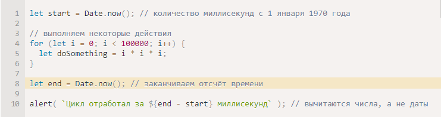

Date - встроенный объект.Он содержит дату и время, а также предоставляет методы управления ими. Например, его можно использовать для хранения времени создания/изменения, для измерения времени или просто для вывода текущей даты.
Для создания нового объекта Date нужно вызвать конструктор new Date() с одним из следующих аргументов:
new Date()
Без аргументов – создать объект Date с текущими датой и временем:
new Date(milliseconds)
Создать объект Date с временем, равным количеству миллисекунд (тысячная доля секунды), прошедших с 1 января 1970 года UTC+0.
Целое число, представляющее собой количество миллисекунд, прошедших с начала 1970 года, называется таймстамп (англ. timestamp). Это – легковесное численное представление даты. Из таймстампа всегда можно получить дату с помощью new Date(timestamp) и преобразовать существующий объект Date в таймстамп, используя метод date.getTime() (см. ниже). Датам до 1 января 1970 будут соответствовать отрицательные таймстампы, например:
new Date(datestring)
Если аргумент всего один, и это строка, то из неё «прочитывается» дата. Алгоритм разбора – такой же, как в Date.parse, который мы рассмотрим позже.
new Date(year, month, date, hours, minutes, seconds, ms)
Создать объект Date с заданными компонентами в местном часовом поясе. Обязательны только первые два аргумента.
- year должен состоять из четырёх цифр: значение 2013 корректно, 98 – нет.
- month начинается с 0 (январь) по 11 (декабрь).
- Параметр date здесь представляет собой день месяца. Если параметр не задан, то принимается значение 1.
- Если параметры hours/minutes/seconds/ms отсутствуют, их значением становится 0.
Например:
Минимальная точность – 1 мс (1/1000 секунды):
Таймеры setTimeOut & setInterval
В JavaScript есть две функции для отложенного запуска кода: setTimeout и setInterval. Отличаются они тем, что setTimeout запускает код единожды, а setInterval — постоянно с заданной периодичностью. Обе функции первым аргументом принимают строку кода, которую необходимо выполнить, или функцию, которую необходимо запустить. Второй аргумент задаёт задержку в миллисекундах. Возвращают обе функции идентификатор созданного таймера.
Функции setTimeout/setInterval "делают отметку", что необходимо запустить некий код через столько-то миллисекунд, а скрипт продолжает работать своим чередом.
setInterval()Метод, предложенный на Window и Worker интерфейсах, неоднократно вызывает функцию или выполняет фрагмент кода, с фиксированной задержкой по времени между каждым вызовом. Он возвращает идентификатор интервала, который однозначно идентифицирует интервал, поэтому вы можете удалить его позже, позвонив clearInterval(). Этот метод определяется WindowOrWorkerGlobalScope миксином.
Стоит отметить, что пул идентификаторов используется setInterval() и setTimeout(). является общим, что означает, что вы можете использовать его технически clearInterval() и clearTimeout() взаимозаменяемо. Однако, для ясности, следует избегать этого.
Получение компонентов даты
Существуют методы получения года, месяца и т.д. из объекта Date:
getFullYear()
Получить год (4 цифры)
getMonth()
Получить месяц, от 0 до 11.
getDate()
Получить день месяца, от 1 до 31, что несколько противоречит названию метода.
getHours(), getMinutes(), getSeconds(), getMilliseconds()
Получить, соответственно, часы, минуты, секунды или миллисекунды.
Никакого getYear(). Только getFullYear()
Многие интерпретаторы JavaScript реализуют нестандартный и устаревший метод getYear(), который порой возвращает год в виде двух цифр. Пожалуйста, обходите его стороной. Если нужно значение года, используйте getFullYear()
getDay()
Вернуть день недели от 0 (воскресенье) до 6 (суббота). Несмотря на то, что в ряде стран за первый день недели принят понедельник, в JavaScript начало недели приходится на воскресенье.
Все вышеперечисленные методы возвращают значения в соответствии с местным часовым поясом.
getTime()
Для заданной даты возвращает таймстамп – количество миллисекунд, прошедших с 1 января 1970 года UTC+0.
getTimezoneOffset()
Возвращает разницу в минутах между местным часовым поясом и UTC:
Однако существуют и их UTC-варианты, возвращающие день, месяц, год для временной зоны UTC+0: getUTCFullYear(), getUTCMonth(), getUTCDay(). Для их использования требуется после "get" подставить "UTC".
Если ваш местный часовой пояс смещён относительно UTC, то следующий код покажет разные часы:
Date.now()
Если нужно просто измерить время, объект Date нам не нужен.
Существует особый метод Date.now(), возвращающий текущую метку времени.
Семантически он эквивалентен new Date().getTime(), однако метод не создаёт промежуточный объект Date. Так что этот способ работает быстрее и не нагружает сборщик мусора.
Данный метод используется из соображений удобства или когда важно быстродействие, например, при разработке игр на JavaScript или других специализированных приложений.
